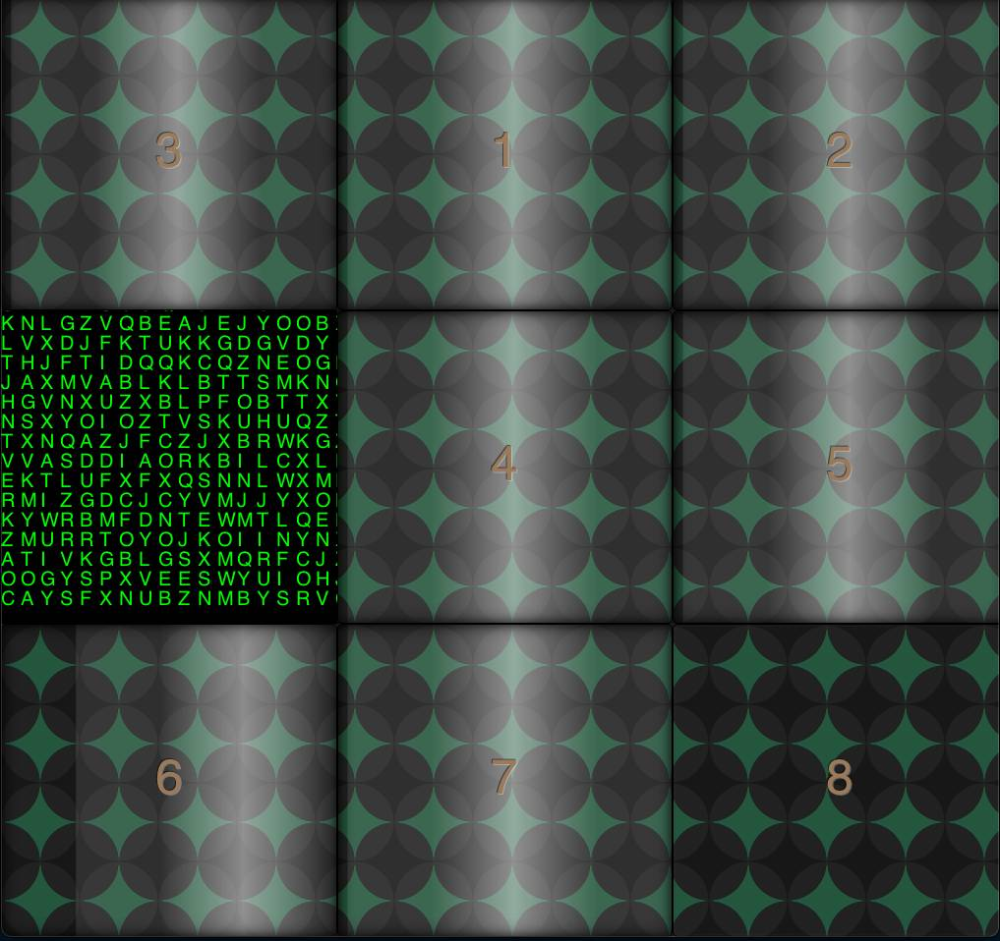
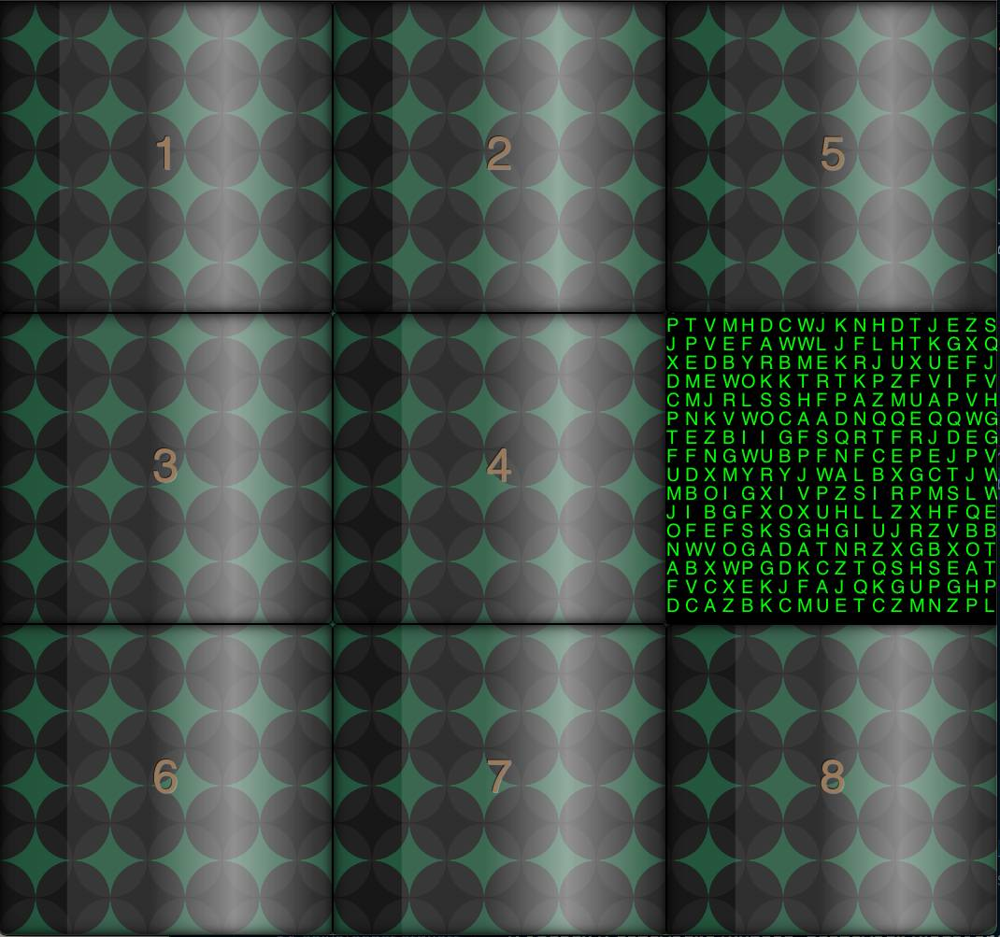
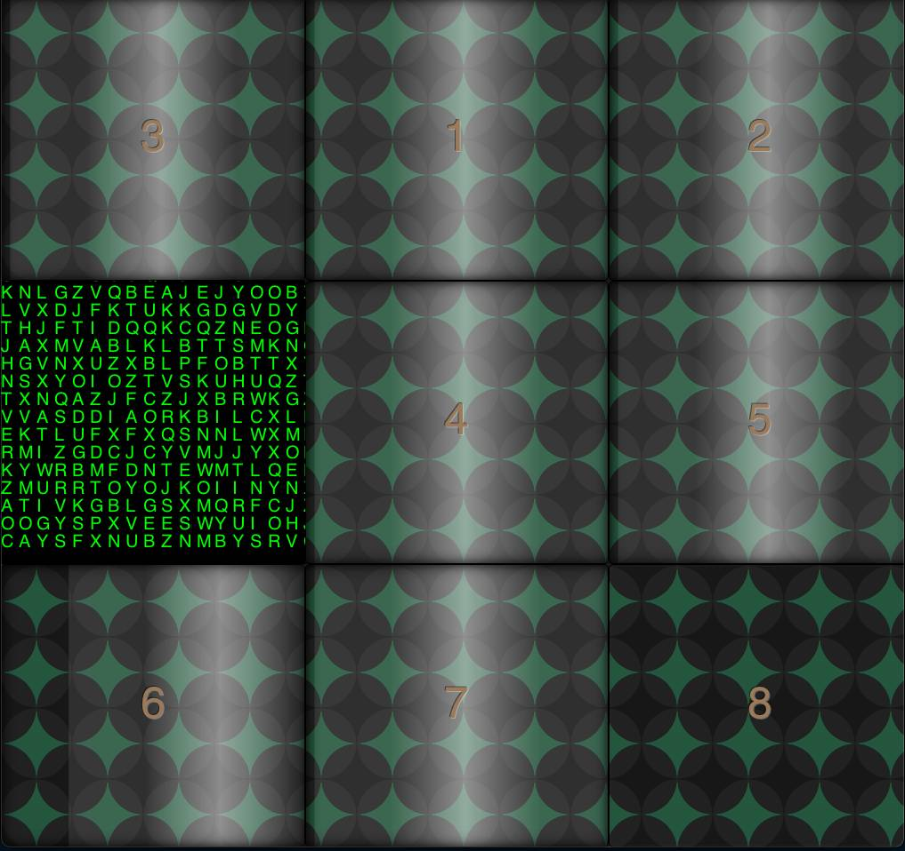
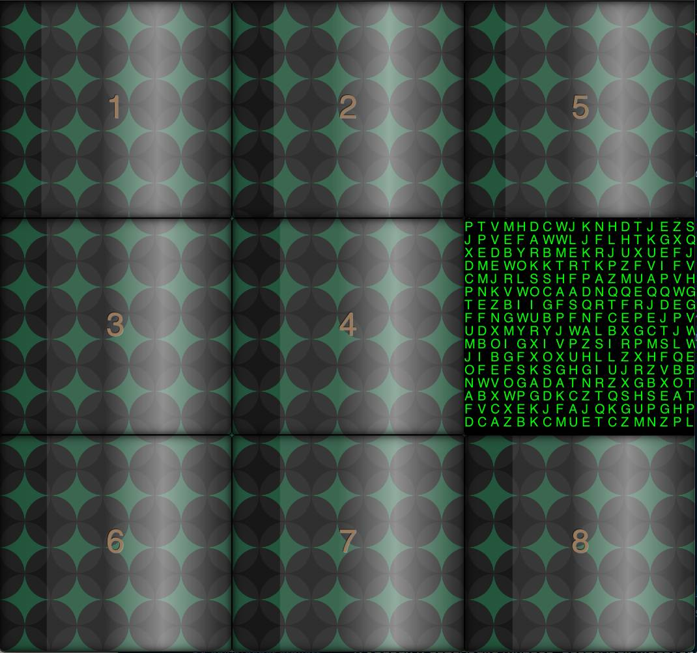

Project Overview
Project _Matrix (Line-Matrix) is a comprehensive exploration of AI search algorithms, using the 8-Puzzle problem as a case study. The program includes implementations of famous search algorithms, such as BFS, IDDFS, GBFS, and A* search algorithms, and a custom heuristic for A* and GBFS. The program was initially developed for the 20551 Introduction to Artificial Intelligence course at the Open University of Israel, and earned a perfect score of 100/100.
AI8Puzzle GTK GUI (C++)
Gallery
 



theMatrix theme GUI
The 8-Puzzle Problem
The 8-Puzzle problem is a classic AI problem, where the goal is to move the tiles from the initial state to the target state, using the minimum number of moves. The puzzle consists of a 3x3 grid with 8 numbered tiles and one empty space. The tiles are initially arranged in a random order, and the goal is to arrange them in ascending order, with the empty space at the bottom right corner, or at the top left corner (see wikipedia).
Example of 8-Puzzle: Moving tile 1 from the top left corner, then moving 4 to the middle
States
class State:
def __init__(self, numbers: List[int], rows=3, cols=3):
self.numbers = numbers
self.rows, self.cols = rows, cols
self.matrix = self._create_matrix(numbers, rows, cols)
def _create_matrix(self, numbers, rows, cols):
return [[numbers[i * cols + j] for j in range(cols)] for i in range(rows)]
The State class is responsible for representing a state in the world. A state, in this specific
problem, is a configuration of the puzzle. Each puzzle configuration converts a linear array of tiles into a
2D matrix. This design choice simplifies both the visualization of the puzzle state and the implementation
of moves within the puzzle space.
Initial State
Example of shuffled 8-Puzzle, GUI with cubes theme
def main():
try:
initial_numbers = [int(num) for num in sys.argv[3:]]
initial_state = State(initial_numbers)
except ValueError:
print("All arguments must be integers.")
sys.exit(1)
print(BFS(initial_state))
print(IDDFS(initial_state))
print(GBFS(initial_state))
print(AStar(initial_state))
The initial state, the one without a parent attribute, is defined based on the user input and
starts as the tree root. The main function is responsible for parsing and initiating the
initial_state instance, then it prints the result.
Actions and Transition Model
Clicking the colored tiles will move them to the empty space
def generate_children(self):
blank_x, blank_y = self.find_number_in_matrix(0)
children = []
for dx, dy in [(-1, 0), (1, 0), (0, -1), (0, 1)]:
x, y = blank_x + dx, blank_y + dy
if 0 <= x < self.rows and 0 <= y < self.cols:
new_numbers = self.numbers.copy()
blank_index, new_index = blank_x * self.cols + blank_y, x * self.cols + y
new_numbers[blank_index], new_numbers[new_index] = new_numbers[new_index], new_numbers[blank_index]
children.append(State(new_numbers))
return children
The actions and transition model are implemented inside the State class's
generate_children method. The State class also includes methods for generating children
states, considering possible moves from the current state. This method implements the Actions and the
transition model.
Goal States

Path to goal state of the 8-Puzzle
The problem includes two goal states, defined as plain List[int] to match the program
initial_state input format.
TARGET_A = [0, 1, 2, 3, 4, 5, 6, 7, 8]
TARGET_B = [1, 2, 3, 4, 5, 6, 7, 8, 0]
Action Cost
Each action performed by generate_children above costs 1, so 1 is the action cost
of the problem. The cost is managed in the Node class which will be described below.
Running the Program
The program supports both interactive GUI and command-line interfaces. Two GUI versions are available: one
implemented in Python using the tkinter library, and another implemented in C++ using the
GTK library. The Python version is easier to use and has more features, while the C++ version
offers cool visual effects and supports CSS styling.
To run the C++ GUI, first make sure you have GTK installed. Then navigate to the directory
containing AI8Puzzle and execute the following command in the terminal:
./make && ./main -s number_of_tilesThe -s flag is optional and allows you to set the number of tiles in the puzzle (including the
blank tile). The default is 9 tiles. The program will generate a random solvable puzzle and open a window
where you can interact with the puzzle.
Elegant theme GUI
You can move the tiles by clicking on them, or use the keyboard arrow keys. You can also use the following shortcuts:
ctrl + n- generate a new random puzzle (shuffled)ctrl + s- solve the puzzle using the BFS algorithmctrl + r- reset the puzzle (default goal state)ctrl + q- quit the programctrl + t- choose new theme fromcssfile
Menu (C++)
To run the Python GUI, first make sure you have tkinter installed. Then navigate to the
directory containing Tiles.py and execute the following command in the terminal:
python3 GUI.pyTo run the program in the command-line interface mode, navigate to the directory containing
Tiles.py and execute the following command in the terminal:
python3 Tiles.py 9_space_separated_numbers_representing_the_initial_stateThe program will print the results for each algorithm in the required format:
<Algorithm name>
<Explored count - number of expanded nodes>
<Solution Path>Technical Details
class SearchAlgorithm:
class ExploredSet:
def __init__(self, initial_state, name=None):
self.root_node = Node(initial_state)
self.frontier = None
self.explored = self.ExploredSet()
self.name = name
self.solution_node = None
The SearchAlgorithm class and its nested ExploredSet class, along with other
relevant details of the technical implementation, are included in the source code of the project. For more
details, refer to the project's documentation and source code.
Node Class
The node class is responsible for representing a node in the search tree. The program uses two types of
nodes: a base Node class and a derived PriorityQueueNode class. Each
Node instance stores the current state, the parent node, and the path cost g(n).
In addition, the PriorityQueueNode class, used in A* and GBFS, includes a priority attribute
for the heuristic value h(n).
class PriorityQueueNode(Node):
def __init__(self, node):
super().__init__(node.state, node.parent)
self.priority = None
def __lt__(self, other):
if self.priority is None or other.priority is None:
raise ValueError("Cannot compare nodes with undefined priority")
return self.priority < other.priority
Search Data Structures
The Frontier class acts as the fringe or the boundary between explored and unexplored states. It
is a priority queue (minimum heap) in A* and GBFS, and a simple queue or stack in BFS and IDDFS,
respectively. In BFS it's implemented as a FIFO queue, while in IDDFS as a stack.
class GBFS(SearchAlgorithm):
class GBFSFrontier(Frontier):
def set_priority(self, node):
return node.my_heuristic()
The GBFSFrontier sets only the heuristic to the priority, thus f(n) = h(n).
class AStar(SearchAlgorithm):
class AStarFrontier(Frontier):
def set_priority(self, node):
return node.cost + node.my_heuristic()
The AStarFrontier adds the node cost to its priority, thus f(n) = h(n) + g(n).
Custom A* and GBFS Heuristics
The program includes custom heuristics for A* and GBFS. The heuristics are implemented as methods inside the
PriorityQueueNode class and are used to calculate the estimated cost from the current state to
the target state. The heuristics are used to guide the search algorithms in finding the optimal path to the
target state.
Console Output
Acknowledgments
Inspired by the book "Artificial Intelligence: A Modern Approach" by Stuart Russell and Peter Norvig. Thanks to the Open University of Israel for the opportunity to work on this project.
License
This project is licensed under the MIT License - see the LICENSE file for details.